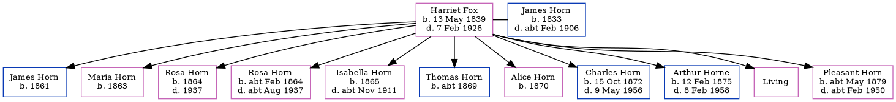

Thomas G Horn c1869 -
[ Home ] | [ Calendar ] | [ Surnames Index ] | [ Census Index ] | [ Family History ]The child of James Horn (a brewer's laborer) and Harriet Fox, Thomas Horn, the first cousin three-times-removed on the father's side of Nigel Horne, was born in Ramsgate, Kent, England c. 18691.
During his life, he was living at Hertford Cottage, Hertford Place in Ramsgate on Apr 2, 18712; and at his birthplace in 18911.
Parents
- James was born in 1833
- Harriet Allen was born on May 13, 1839
Citations
- 1891 England Census Online publication - Provo, UT, USA: The Generations Network, Inc., 2005.Original data - Census Returns of England and Wales, 1891. Kew, Surrey, England: The National Archives of the UK (TNA): Public Record Office (PRO), 1891. Data imaged from The National (Relation to Head of House: Son)
- 1871 England, Wales & Scotland Census - Findmypast (was age 3 and the son of the head of the household)
Family Tree
Generated by ged2site. Last updated on Jun 11, 2024